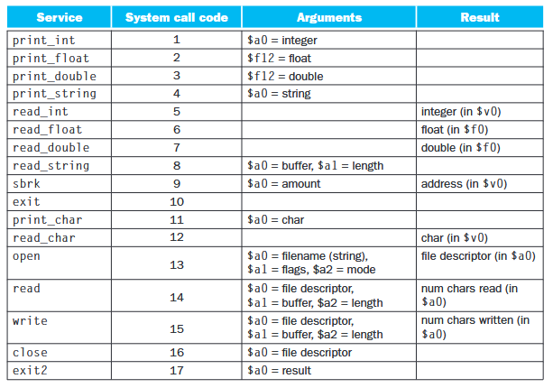

Libraries (cont.)
Two types of libraries: static libraries, and dynamic (aka "shared") libraries
- Static library: becomes part of executable
- Dynamic/shared library: exists as a separate file, is not included in executable
Advantages and disadvantages of using static vs. dynamic libraries
Static library:
- advantage: easier to use
- advantage: always the correct version of the library
- disadvantage: makes the executable larger
- disadvantage: updating static library requires rebuilding executable
Dynamic library:
- advantage: smaller executable
- advantage: updating dynamic lib doesn't require updating the executable (usually the case, unless you update the function signatures in the dynamic library)
- advantage: one dynamic library can be shared by many applications
- disadvantage: can complicate version control
System calls
- Programs have limited rights on our systems
- e.g., our programs do not have rights to perform input and output themselves
- a program can ask the OS to do a job (like input/output) on its behalf.
- -> Such a concept is called a "system call"
Appendix A in the textbook has a table of syscalls, with the following terminology:
- Service: things that the OS offers (e.g., print_string, read_int)
- System call code: e.g., 1, 2, ..., 17
- Arguments: register and datatype, e.g. "$a0 = integer"
- Result: eg., "integer in $v0"

Example: print "a":
addi $v0, $zero, 11 # 11 is the syscall code for 'print'
addi $a0, $zero, 97 # char code for 'a'
syscall
Note: $v0 contains the kind of service that will be used by the syscall (or rather, the code for that service).
Note: this is exam material.